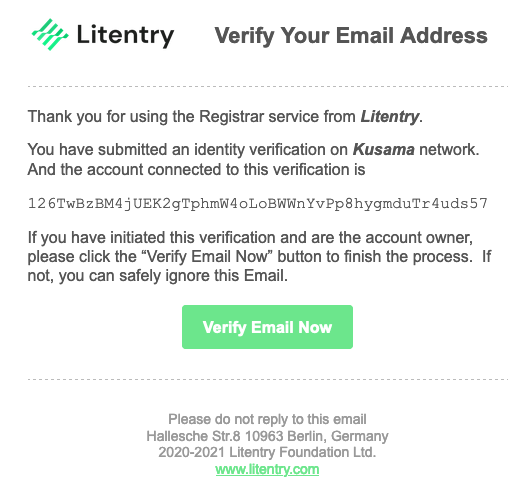

Introduction
Litentry Protocol is helping support change that in favour of a user-centric internet with the blockchain.
Concept of User-Centric Internet
As you entrust safe-storage of your passwords and online activity data to third parties on the app-centric internet of today, you are often asked to comply with ambiguous and unfair privacy policies handing over control your own data. As a result your data is often harvested and used in ways you do not have a say in and which you have not approved of.
Litentry is helping support change that in favor of a user-centric internet with the blockchain. That means the internet should driven by the users needs. As a Litentry user you are in total control of your information and will be able to decide exactly what information is shared with various apps and services. You will not be subject to the cost of migration from one application to another or subject to specific terms of a particular app or service. The profit generated by the user's data should flow back to you the user, instead of mainly flowing to service providers/companies, this is made possible by woning your own data and not being subject to the restrictions and applications lockins that are so familiar with Internet 2.0. With Litentry and Internet 3.0 you will be able to ensure that you only provide your user data when you want to and that you are rewarded if/when you supply your data to any advertiser or service provider.
Litentry includes an identity-based network and related tools, as a whole it consists of a decentralized identity authentication and user activity data management infrastructure.
Highlighths
Blockchain Powered
Litentry is built on Substrate, and as such Litentry inherits the leading edge technologies of the Blockchain industry. Litentry aim to be one of the first Parachains of Polkadot Network and as such benefit from this thriving cross-chain ecosystem and Polkadot's shared security.
Identity Management
Users get back the control of access history and privacy data generated in the apps or services. And their identities are kept anonymous and independent from each other.
Decentralized Storage
A user is able to store their encrypted identity related data on a decentralized storage like IPFS or Arweave, or an on-chain Database. The data is protected by the access control of decentralized storage.
Identity Staking
With a transparent protocol, an identity owner could stake his identity into identity pools and get regular rewards while still having their data and real world identity protected. In other words by staking your identity and data, you make your data available anonymously to be queried and mined by an app or service. This means that your data can be monetised for your benefit as well as for the DApp that is mining the data through permissioned data queries.
Decentralized Ecosystem Contributor
Since your identity profile can be shared anonymously between different platforms, a user does not need to create multiple accounts in each application in order to use the different services without creating user profiles, passwords and registration with each service. Because the user owns his/her data the barriers of migrating to another service are significantly lower. This allows the user to easily migrate to the service or application that best services their needs in a frictionless manner. Because the user owns their own data and profile the application or service is prevented from building an invasive user profile. Through this Litentry, the user and the decentralized ecosystem benefit each other.
Concept of Decentralization
The decentralization of Litentry includes following aspects:
Decentralization of identity storage
With Litentry the User's data, including identity credential, are stored in a anonymous encrypted decentralized storage, instead of the central data server of the service provider, currently we support IPFS, in the future we will have other storage support like Arwaeve or Litentry native on-chain key-value store.
Decentralization of identity authentication
When user requires an authentication, he needs to submit an authentication request transaction. The identity validator listens to the authentication request event from the Litentry Mainnet. Then it provides validation for the authentication request.Decentralization of identity relationships
The relationship of user's data stored in an external storage, and the identity associated with it is validated with cryptographic calculation, and is recorded in the decentralized network instead of regular centralized service like Certificate Authority used in HTTPS protocol. The owner (real person) may have different identities and the different identities belonging to owner are not discoverable in any of the data, and protected by Schnorr25519 Algorithm. In a similar way to which your public and private keys of a wallet are related but your private key is not discoverable from you public key.
Decentralization of Identity Data Allocation
The user data generated when using third party applications/services is processed by the resolver function on Litentry Network, thus providing the user with trustworthy data, from various sources. As such users are able to get and store valuable user profile like health info, shopping history, etc.
Definitions
User
The user is the origionator of the data, it is a person who owns one or more identities or IoT devices.
Identity
It is a generalized concept of identity, not only includes the identity of a person, but also the identity of anything tht could generate claims like an IoT device. A person could own multiple identities, like an identity that only related to their music preferences, an identity only for data in Germany, or an identity as a game player in a specific game or accross many games. The identity is the reference to its related external user data, the id by itself does not have any meaning other than the linking of the user with the external user data.
External Data
Data generated when using the applications/services like the shopping history when a user is shopping in e-store. This external user data is associated with a particular user identity.
Authorization Token
The authorization token is a cryptographic proof that the holder of the token has permission to read and/or write external data for the related identity. This is similar to an authorisation token that would give permission to do a transaction from your crypto wallet.
Protocol
Concept of Decentralization
The decentralization of Litentry includes following aspects:
-
Decentralization of identity storage: User data, including identity credential, should be storage in the user's owned devices, instead of the central data server of a service provider. -
Dentralization of idenity authentication: The identity validator is connected to the decentralized network, and it validates the authentication request independently. -
Decentralization of identity ownership: The relationship of data, person, and identity is validated with a cryptographic calculation, and it is also record in the decentralized network instead of centralized service like Certificate Authority using in HTTPS. -
Decentralization of Identity Data Allocating: When users use third-party applications/services, they are producing a lot of valuable data. And those data will be collected and processed by the resolver function on the Litentry Network, which further will deliver value for the users. Such as users can create valuable profiles like health info, shopping history, etc.
Definitions
User: The originator of the data, the person who owns one or more identities or IoT devices.Identity: It is a generalized concept of identity, not only include the identity of person, but also any thing could generate claims like an IoT devices. A person could own multiple identities, like an identity in Germany, an identity as E-Resident in Estonia, or an identity as an game player.Authorization: It is a piece of data or a token that could proves a users ownership to a capability or a real world thing. Authorization could be the permission to read the age data of a person, or the ownership of a 3D printer on a certain day.External Data: It is the data generated when using an applications/services, like the shopping history when a user shopping in e-store, or the age data read from the aforementioned age proving request.
Network Interoperability
Based on Substrate Network, Litentry aims to become a fundamental part in the Web3 infrastructure.
// TODO
Network Layer: Polkadot is here to connect different blockchainsRuntime Layer: The Litentry Pallet could be used for other Substrate network builders.Application Layer: Small business could build smart contract on Litentry network.
Token Economy
Economy Participants
Identity Staker:
The users who has an identity recorded on chain, and has chosen to stake their identity and its related data into an identities mining pool.
Identity Validator:
The identity validator is responsible for checking the correctness and completeness of the data from identity stakers.External Storage:
A decentralized storage records all the related external data of the identity (Currently only IPFS, in the future we may add more database support)
Identity Staking Data
The data that is staked in a mining pool for a particular identity that has chosen to stake their associated data.
Node:
The node maintains the integrity of the network, the nodes task is firstly to record the state of the network , and secondly to respond to data matching queries by sending data access requests to the external storage and using off-chain workers to validate the validity of the identity staking data.
Data Demander:
A data demander is a data consumer in the Litentry network. He retrieves specific data according to the criteria he needs. After the aggregation engine matches the data demander and provider, the demander needs an authorization token from the identity provider.Data Origin (Data Generator):
there are three types of data origin:
- Decentralized services/apps generate data when user interact with the dapp. This data is signed by the data generator.
- Traditional services/apps may offer data migration services in this case the data may be signed or not. If it is signed and the data generator is registered on the Litentry network, the data generator also benefits from data queries.
- User generate the data by his own.
Identity Staking Process
Identity Preparation:
An identity staker who wants to stake their identity into the identity staking pool first needs to have the required data type and format attached to this identity, and the data must be stored correctly in the External Storage.
Identity Data Picking:
Then the user chose which kind of the data he want to staked into the pool, only the picked type will be available for data matching, also the more data he chose, the more benefits he get, staker will need also pay a validation fee to the network and a basic staking deposit.
Staking Identity Validation:
The data will be sent to random selected identity validator on the network. The selected identity validator will try to prove wether the data is correct or not.
There are three possibilities:- If any one of the validators reject the data, the staking process fails, and part of the staking fee will be returned and the validator will not be paid.
- If all validators validate the data then identity with authorized data will be placed into the relevant identity pool, a validation fee is paid to validator.
- Same as above, if all validators validate the data then identity with authorized data will be placed into the relevant identity pool. But if in the next 30 block any malicious data is found for this identity, a part of reward of all the approving validators will be slashed, this slashing amount is decided by the existing blocks number (in this case, 30) of the existing malicious data.
Staking Identity Finalization:
The value of the identity data will be judged by its completeness and the requirements from data demander. After the data from the identity staker is accepted, the identity staker will receive rewards, and the reward is bound to the staking identity until it retires from the identities pool. The value of the data being staked is quantified, and the staker will earn staking rewards in proportion to the value of the data staked.
Staking Identity Retirement:
After certain block, the identity will be retired from the identities pool, after that, the rewards bound to the identity and the deposit will be released. User could choose to update the identity data and then restake it to earn further rewards.
Identity Query Process
According to the different data type required by data buyer. There are two types of query
1. Matching Query
Data Matching Request:
Data buyer submits a request for data with a selected data type and criteria thsi is called a matching query.
Data Matching Pre-Making:
The Off-chain worker in the network will now start to generate a list with randomly selected identities that have the required type of data. The length of the list is decided by the fees the data buyer selected to pay, the more data the buyer pays for, the bigger the list. The on-chain randomness makes sure that each time the result list will be different, thus incentivising the data buyer to make multiple queries.
Data Selection:
The selected list of identities is sent to the external storage. The data is aggregaed and sent back to the network and received by an off-chain worker. The off-chain worker will use the selection algorithms to get the most suitable identity data for the buyer. This data is then sent back to the buyer. The match winner will get the most of the fee paid by the buyer, others fee goes to the others in the list and data origin . Litentry will earn a small part of the fees paid.
2. Target Identity Query
Identity Data Request:
Data buyer submits a request for specific data associated with a specified identity (the data staked for a specific person). The query must include the matching data type required and the identity id of the relevant identity staker. For user security the query must include an authorization token signed by the identity owner.
Request Validation:
Anode in the network will check the authorization token issuer, receiver, and validate the block number. From this the node will validate the request.
Request Finalization:
Once the node has validated the request a data request event is triggered, the off-chain worker starts to request the specified data from external storage, once the data is received, it is sent as an http request back to the data buyer. A fee is paid to the identity owner , and Litentry will earn a small administration fee.
Incentivization
Basics: LIT is the native token of Litentry Network, each block the network will give a fixed block reward to all identity stakers in the identity staking pool. In the staking finalization process, the value of the staking identity data will have been quantified. The block reward will be distributed to identity stakers in accordance to this quantified identity staking value.
For Identity Staker:
Identity stakers earn profits from two parts,
- Block Reward: Once staker data is accepted into the identity staking pool, the Identity Staker will get the reward for each block.
- Matching Fee: When the matching query with staked identity succeeds, the owner will get paid. In the early stages, where there are not many matching requests, the identity staker will mostly benefits from block reward. When the network gets more data buyers and becomes mature, the share of matching fee will more evenly distributed to the high quality identity staker. Thus in the long term an identity staker’s main benefit will be the matching fee thus incentivising an identity staker to stake the highest quality data possible.
For Identity Validator
Users are motivated to run an Identity Validator because it is part of the responsibility to validate the correctness of the data. If the identity validator proves the data, it will get rewarded once the data is used since the validator has proved the correctness and completeness of the data.
For Dapp as Data Provider
Explicit benefits are the grants from Litentry Foundation; each success data matching will pay the fee back to the Dapp or Data Provider. Implicit benefits are a new way to attract new users for their Dapp since users could harvest their data and be glad to use their services.
For Node
As the network maintainer, a node will get native token reward (LIT) from the Litentry network.
For External Storage
The fee that the identity staker pays when they stake is used to pay storage fee to the external storage for their data. This matches the decentralised external storage business model perfectly and they are therfore willing to provide their services to Litentry network.
Architecture
The protocol is mainly constructed with following parts:
- Litentry Runtime
- Litentry Authenticator Mobile App
- Litentry DApp Playground
- Litenry IPFS Data Center
- Litentry SDK
- Litentry GraphQL Caching Server

Other than web 2.0 architectures, we are suppose to build a decentralized ecosystem with Blockchain as backend services than cloud or single node server.
Runtime
Litentry Runtime is built with Substrate, as such it inherits leading edge blockchain technologies.
We use offchain worker to fetch identity related data, and this data does not need to be stored centrally but on the user's client or a decentralized storage. Thus remove the uncertain and privacy issue by the client side applications.
We aim to be one of the first Parachains on the Polkadot and Kusama Network. As such we will benefit from this thriving cross-chain ecosystem.
User Side
The user has full control of their identity data, the data generated from Apps and the flows to their decentralized storage like IPFS or Arweave. The user's true identity is anonymous, cryptographic separated. <!-- -->
Litentry Authenticator
On user side we have Litentry Authenticator as user's mobile data hub.
Personal users would like to use an application to manage all its identities, it could also become a Hub connected to different interest IoT devices. For example, directly buying the authorization or the data from other IoT devices. With the advantage of GPS of mobile phone, it could further integrate with LBS (Location Based Services).
In order to work in a fully decentralized scenario, itself also need to integrate a cold wallet, where could keep a user's private key in a secure environment provided by Android or iOS.
DApps build with Litentry Protocol
With Litentry SDK, developers could easily build fully decentralized Apps or Services. User could directly signin without password and without registration. Simply with a Cryptographic QR code. Once signed on the App would use IPFS, Arweave or even on-chain key value database for storing user data, instead of storing data on their own centralised backend server.
By doing this we are converting an app-centric internet to a user-centric one.
Litentry IPFS Data Center
Litentry uses OrbitDB to offer an IPFS database support. In the Data Center, user may check their identity related data and tokens.
In the future we will implement Arweave and on-Chain key value storage.
Middleware Layer
It mainly includes:
-
Event listener and off-chain caching server: With cached data the query load on the blockchain is dramatically reduced, furthermore, it saves the caching data on a centralized database in order to improve the speed of application-based blockchain query, like Infura for Ethereum. A relay script server is also built here, to automatically trigger an event periodically regarding block generation.
-
GraphQL caching server: Since IPFS is still under testing, we currently use graphql caching server to improve user experience for syncing the data, it is also caching anonymous data, and improve data query speed.
-
Validation and query server: validate the authorization tokens with HTTPS request for IoT devices or application.
-
Client side SDK library: The javascript binding library will directly connect the front-end applications with Blockchain, for example, React or React Native applications.
Privacy data feeding and protection
The legacy verification process has many problems with regards to the privacy of data generation as an example
-
If a user come to Hotel with his digital key (claim). The smart lock itself could generate data, and each time the user entered the room, this data is generated, but they are harvested by the hotel, and never reach to user.
-
The Data generated are combined with user's accountID (public address), when these authorizations (claims) be more enough, it will be practical for the external companies to monitor the on-chain state, and build user profile.
To resolve this problem, and let the user get their data, we have designed our new method based on Substrate offline worker and crypto algorithms based on Schnorr25519.
-
To protect user's data, we migrate the data generation process on to Substrate, after the verification process, the crucial arguments like user address, verifier, time, token hash will be send into blockchain with a
verifierextrinsic. Which is independent with off-line verification, thus it will not affect the verification time. Then the data will be generated in offchain worker, generate access token to user's storage, and then feed the data back to user. -
To protect the user data, we will use HDKD feature to periodically generate new soft derivated key pairs for certain user. Verifier can prove that the address belongs to the parent keypairs using crypto algorithms. Thus user will not need to always show only the one public address. Another key point is to use ring signature, which will hide user's signature
behind bunch of people. Child address generation feature is already implemented in our crypto wallet and Ring signature is our current experiment direction.
The workflow of user data feed could be seen in the following diagram
Related Article about Off-Chain Worker: https://www.parity.io/substrate-off-chain-workers-secure-and-efficient-computing-intensive-tasks/
Runtime
Github Repository: https://github.com/litentry/litentry-node
There are two pallets from litentry both account-linker and offchain-worker.
https://github.com/litentry/litentry-pallets/blob/dev/pallets/account-linker/src/lib.rs
https://github.com/litentry/litentry-pallets/blob/dev/pallets/offchain-worker/src/lib.rs
Abstract
The identity runtime protocol links all the cross chain accounts to make an unique Litentry Identity. After the accounts are linked, the Litentry user can trigger the asset claim via a transaction. The Litentry offchain worker will query your assets in the other blockchain network and generate asset proofs on-chain. Any Defi or other Dapp can then use this information for their service:
-
Account Linking: Litentry user signs the specific data with their private key.
-
Asset Claim: Litentry user asks Litentry runtime to query its assets and generate a proof.
-
Defi or other Dapp: Use the Litentry ID and its assets proof for their service.
Stakeholders
- Litentry user: Users register with the Litentry network, they can get the token incentive if their data is queried by a DeFi or other Dapps. Their information is protected with encryption and used in a secure runtime environment.
- Defi: With Litentry identity, users can view their personal information, including credit and on-chain reputation. This information can be applied to mortgage rates and credit borrowing in DeFi lending.
- Dapps: Litentry user's cross chain information includes all activities in the whole cryptocurrency world. Litentry is the unique and unified entry point for their service.
- Litentry node runner: They will earn the block production incentive and they can run offchain workers for cross chain asset query service. They will be rewarded if the query results they submit are correct.
Scenario:
Defi:
Litentry can be used to provide a full credit history for a user. This credit history can be used in a Defi application or service for borrowing. By using credit histories, a full access to the users history and their assets a lending application can lend money with less collateral thus reducing the need for the current scenario where extremely overcollateralised loans are given. This would work as follows.
-
Asset claim: If Litentry user also owns assets in Bitcoin and Ethereum, they can link their account from Bitcoin and Ethereum. Then they request Litentry to query their balance and create asset proofs;
-
Defi service: Litentry provides the SDK and API for Defi application. The Defi service can access Litentries ID and asset proofs, based on this information, the service can use this data in their algorithmic model. Based on the above data they can decide on an appropriate loan amount, interest rate and credit score.
Cross Chain Identity:
Litentry data and account aggregation service can help Dapp developers to avoid having to implement API calls to numerous BlockChain networks.
Smart contract with credit score algorithm:
Lite entry supports smart contracts being built and deployed in the Litentry network. Different smart contracts can use different algorithms to compute the credit score. The Dapps being built for Defi can use one or more of these smart contracts to get their client's financial profile and credit rating.
In the future
The Litentry runtime is under very active development now. More pallets will be implemented and integrated into Litentry runtiime. Litentry network will acquire the slot of both Kusama and Polkadot. Cross chain ID aggregation and query will be realized.
Chain State Storage
Identity Related
Identities: T::Hash => IdentityOf<T>;
IdentityOwner: T::Hash => Option<T::AccountId>;
IdentitiesCount: u64;
IdentitiesArray: u64 => T::Hash;
IdentitiesIndex: T::Hash => u64;
OwnedIdentitiesCount: T::AccountId => u64;
OwnedIdentitiesArray: (T::AccountId, u64) => T::Hash;
OwnedIdentitiesIndex: T::Hash => u64;
Token Related
AuthorizedTokens: T::Hash => AuthorizedTokenOf<T>;
AuthorizedTokenOwner: T::Hash => Option<T::AccountId>;
AuthorizedTokenIdentity: T::Hash => Option<T::Hash>;
AuthorizedTokensCount: u64;
AuthorizedTokensArray: u64 => T::Hash;
AuthorizedTokensIndex: T::Hash => u64;
OwnedAuthorizedTokensCount: T::AccountId => u64;
OwnedAuthorizedTokensArray: (T::AccountId, u64) => T::Hash;
OwnedAuthorizedTokensIndex: T::Hash => u64;
IdentityAuthorizedTokensCount: T::Hash => u64;
IdentityAuthorizedTokensArray: (T::Hash, u64) => T::Hash;
IdentityAuthorizedTokensIndex: T::Hash => u64;
Extrinsic
issueToken
fn issueToken(to, identity_id, cost, data, datatype, expired)
Issue a token of an owned identity to certain account.
to: Hash, the receiver identity ididentity_id: Hash, the issuer identity idcost: Balance, the transfer cost of the tokendata: byte, The data stored in the tokendata_type: byte, the type of the data represent in byteexpired: byte, which define the expired date of the token
registerIdentity
fn registerIdentity()
Register a new identity for this account.
registerIdentityWithId
fn registerIdentityWithId(identity_id)
Register a new Identity with existed identifier as Identity ID, this is useful when register a third party devices or services. For example, a user buy a new IoT camera, there could already exist a identifier on the back of device reserved for the buyer.
identity_id: Hash, the identifier to be used as identity ID
transferToken
fn transferToken(to, token_id)
Transfer a owned token to another account
to: AccountId, the future owner of the tokentoken_id: Hash, the ID of the transferred token
Types
{
"Address": "AccountId",
"LookupSource": "AccountId",
"IdentityOf": {
"id": "Hash"
},
"AuthorizedTokenOf": {
"id": "Hash",
"cost": "Balance",
"data": "u64",
"datatype": "u64",
"expired": "u64"
}
}
When using with Polkadot.js App you will need to add the above Litentry's types so it can encode and decode the extrinsic correctly, copy the following code to the text field on "developer" tabs: https://polkadot.js.org/apps//#/settings/developer .
Authentication Mobile App
Github Repository: https://github.com/litentry/litentry-authenticator
Download Litentry Authenticator v1.1.1 from Android App Store
Mobile App Abstract
Litentry users can use a Wallet Application to manage all their identities, it could also become a Hub connected to different IoT devices that they are interested in. For example, the user could directly buy the authorization or the data from IoT devices. With the advantage of GPS of mobile phone, it could further integrate with LBS (Location Based Services).
In order to work in a fully decentralized scenario, the mobile app itself needs to integrate a light client, where a user's private key can be stored in a secure environment provided by Android or iOS.
Mobile Application Screenshots:
For the step to step guide on use Litentry Authenticator please refer to this article.
Recover Seed and Manage Account
Register Identity and 2FA Authentication
Check Token Related Data
Litentry SDK
Github Repository: https://github.com/litentry/litentry-sdk
This library provides useful functions to interact with the state on Litentry and user identity data related IPFS Storage.
It helps developer to build client side decentralized applications
Getting Started
yarn add litentry-sdk
Import litentry-sdk to start using it, SDK mainly includes three part, hooks, query and ipfsApi
import {hooks, query, ipfsApi} from 'litentry-sdk';
React Hooks for Litentry
//Api loading State
hooks.useApi(): boolean
//Get Identities, use updatedIndex to force refresh
hooks.useIdentities(account: string, updateIndex: number): string[]
//Get Identity current owned tokens
hooks.useTokens(identityHash: string): string[]
//Get the owner of the token
hooks.useTokenOwner(tokenHash: string): string
//Get account balance of LTT
hooks.useBalance(account: string): string
//Help async function for query issuer Identity of the token
hooks.getTokenIdentity(tokenHash: string): Promise<string>]
//Help async function for getting the last issued identity
hooks.getLastIdentity(account: string): Promise<string | void>
// react hooks for using native extrinsics on Litentry
hooks.useExtrinsics(): {
registerIdentity: SubmittableExtrinsicFunction<'promise'>;
issueToken: SubmittableExtrinsicFunction<'promise'>;
}
Identity Data Query
Identity data is stored in the IPFS network and cached in Litentry GraphQL data server.
These are the functions to query the latest data on IPFS:
ipfsApi.getAddress(identity: string): Promise<string | null>
ipfsApi.getData(identityId: string): Promise<string[]>
ipfsApi.registerIdentity(identity: string): void
and the functions to construct query http request from GraphQL:
query.getData(identity: string): string
query.setData(identity: string, data: string): string
query.method(methodName: string, identity: string): string
Litentry DApp Playground
live site on https://dapp.litentry.com/
Repository: https://github.com/litentry/litentry-web.
For more information on how to start with Litentry DApp Playground please refer to this article.
Litentry Playground is a hub for decentralized web app applications to achieve Substrate based authentication.
User use Dapps with Litentry decentralized 2FA mobile App. This allows users to use Dapps without registration, passwords and no App migration barriers.
More about the Authentication (Sign in Process):
The Object of Litentry Authentication
- It should allow users to use his/her owned Substrate account related identity to login to a third party website (that supports this login method).
- It should be easy to use and reasonably easy to setup.
- It should not compromise the security of the user's Substrate account.
- It should allow users to recover their credentials in case of loss or theft.
- It should not require knowledge of Cryptography or Blockchain with authentication.
- It should have reasonable latency for a login system.
- It should not cost users gas (or money) to login.
- It should be reasonably easy for developers to implement in their apps.
The Implementation of Litentry Authentication
- User on a third party website and click login with Litentry Button
- A preset account will come if user has logged on with Litentry before in this computer or device, or a QR scanner will come up for user to scan his/her Substrate account QR code.
- At this time the third party website will send a transaction to Litentry network with a challenge string and its receiver server address. And sign a JWT with challenge and server address embedded in it.
- User now has to open the mobile app (best integrated with Substrate light client). The mobile app has detected the auth request event, the user will authorise the JWT (JSON Web Token)in the mobile application (this signs the transaction using the users private key and then sends the double signed JWT (JSON Web Token) to the server address.
- The server validates the token received from the user and then finishes the logging process.
- After the usage of the third party web application or service, third party allocated the user browsing data/history and query the user's data resolver address, then user data is send back to the resolver and being process and harvested into user's own database.
Sign in to DApp Playground
Star Songs in dSpotify App
Record mood with dTwitter App
Litentry IPFS Data Center
Github Repository: https://github.com/litentry/litentry-ipfs-data-center
Live Site on https://data.litentry.com/
Litentry uses OrbitDB to offer an IPFS database support. In Data Center, user may check their identity related data and tokens.
In the future we will implement Arweave and on-Chain key value storage.
Middleware
Live Server: https://graphql.litentry.com:4000/playground
Github Repository: https://github.com/litentry/litentry-ipfs-graphql
Currently, we provide a GraphQL caching server for recording event on the Litentry blockchain and caching data from IPFS.
IPFS is still under testing, graphql caching server could improve user experience for sync the data, it also caching anonymous data, and improve data query speed.
Query types
type Record {
${recordKey}: String
}
type Query {
registerIdentity(identityId: String): String
determineAddress(identityId: String): String
addData(identityId: String, data: String): String
addDataAddress(address: String, data: String): String
getData(identityId: String): [Record]
}
Example for query playgroundRecord data of certain identity
https://graphql.litentry.com:4000/graphql?query={getData(identityId:"0x992c710c7fba11ccd22a2fbfec1af6ea85d488807e63e10cbbd16256fcf95752"){playgroundRecord}}
query IPFS address of certain identity
https://graphql.litentry.com:4000/graphql?query={determineAddress(identityId:"0x992c710c7fba11ccd22a2fbfec1af6ea85d488807e63e10cbbd16256fcf95752")}
Light Client Services
Concept
Light Client should support all the networks on Substrate, and each of them have a node, so we should not pre-package all the nodes into the App, but support the app to download the most recent binary files and save them into the app. It should have at least “choose network”, “start service”, and “stop service” button. And most of the time it should be running in the background and work as an interface for all the apps to interact with a certain network.
In addition to giving apps a decentralized feature that talks to the network. An app could register an event, subscribe to an event on the light client service and push notifications to the user. So that the notification does not need to go through Android’s or Apple’s message center. A challenge would be how to always keep the light client app alive, and when the user powered off the phone, the light client would stop receiving messages (a breakpoint resume function could be implemented for the user to get events from the last fetched block).
Android Implementation
The binary could successfully be compiled with the guide here and run on an Android Devices.
To keep the light client always living in the background, we need to use Service, but the policy changes from time to time.
a minimal implementation: https://github.com/hanwencheng/LightClientServices, which supports users to download the binary of Flaming Fir, and run the service in the background.
Registrar Background
Decentralised Identity (DID) consists of a triangle of Trust. The atester (registrar), the credential holder and the verifier. The atester (verifies/atests/judges) that the credentials for the identity are correct. Credentials could be email address, twitter account or any other data that could be used as identity credentials. The credential holder is the person, business or IOT device that controls the credentials. The verifier is the entity to whom the credentials are being presented.
As an example if you are wanting to use a dapp or service and they would like to verify that you are identified by your email address and/or twitter account. They could ask for these credentials. As a user wanting to use this service you could choose to hand these credentials over to them. Because the credentials are atested by a trusted attester the verify will accept the presented credentials and allow you to use the Dapp or service.
Litentry is a registrar in polkadot parlance (an atester in self sovereign identity parlance). This means that Litentry to atest to (issue a judgement) of the validity of your email address, twitter account and your element account. This section covers How to verify your identity with Litentry and the implementation details of Litentry.
Litentry and Polkadot
Polkadot provides a service that allows participants to add personal information such as email addresses and twitter accounts to their on-chain accounts. The user can then ask for verification of this information by a registrar. Litentry is a registrar. A user can request a registrar to make a judgment on their claims. The user can select a fee that they are willing to pay. Registars are accepted via submitting proposals to the democracy process in Polkadot.
Litentry has been accepted as a Registrar for Kusama.
How To Verify Your Identity
Introduction
While the anonymity Web3 provides has a great advantage in user privacy, revealing partial personal information can help gain a higher reputation and trust in the Polkadot ecosystem. This document introduces a registrar service that is fully automatic, leveraging cryptographical design to eliminate human interventions. Litentry registrar focuses on providing judgment for a user's display name, email, twitter, or element name (previously called riot)while preserving user privacy.
We will walk through the identity verification process step by step: First, users need to set their identity information on the chain; Second, they may request the registrar to verify the identity. Users will enter a maximum fee they are willing to pay for the service. After that, the dedicated registrar can ascertain.
Step 1: Set an on-chain identity
- Go to the 'Accounts' session on Polkadot-JS Apps
- Make sure you're in the Kusama network by looking at the top left of the page. If not, click on the toggle to switch
- On the accounts list, click on the dots icon on the right side of your selected account and click
Set on-chain identity.
Figure 1.1 Set on-chain Identity
- You'll see a popup window of 'register identity'. Click to turn on include field of display name , email , twitter , riot(also known as element) and enter your information. Once you finish, click Set Identity to submit the transaction.

Figure 1.2 Submit Identity information
Now you have successfully submitted an identity! Since your information is not verified yet, you will see a ⚪️ next to your username.

Figure 1.3 Unverified Account
Step 2: Judgement Request
To request the registrar to validate your on-chain information:
- Go to Developer->Extrinsic, select your account.
- Select
identityundersubmit the following extrinsic, andrequestJudgement(reg_index, max_fee)transaction. - Enter '4' for
reg_index(index of the registrar) - Enter '0.04' KSM for the service fee.
- Click on
Submit transaction

Figure 1.4 Judgement Request
Step 3: Email Verification
You should receive a verification email from Litentry. Click on "Verify Email Now" to complete the verification process (see figure 1.5). After that, you will receive another email that confirms the verification.

Figure 1.5 Email Verification Example
Step 4: Element Verification (Optional)
- An invitation will be sent from "litentry-bot" on Element, accept the invitation
- Click on the verification link from "litentry-bot" to complete verification of the element account. Once the verification process is completed, you will receive a confirmation message (see figure 1.6).

Figure 1.6 Element Verification Example
Step 5: Twitter Verification (Optional)
- Follow @LitentryReg on Twitter
- Make sure your account is open to private messages in your privacy settings. Otherwise, the verification message will not go through.
- You'll receive a verification link on DM from @LitentryReg. Click on the link to complete verification of your Twitter account. Once it is completed, you will receive a confirmation message (see figure 1.7).

Figure 1.7 Twitter Verification Example
Once everything is successfully verified, you will see your account status become "reasonable" with an ✅ icon. Congratulations - Your identity is now verified on Polkadot-JS Apps!
Register Fee
The judgment fee of the Litentry Registrar is 0.04KSM.
It's important to notice that no KSM is sent to our registrar at any time before the judgment is completed. You should NOT send funds to our account directly. When calling requestJudgement, the registrar fee will be locked and put aside. It will be transferred to the registrar only after the registrar finishes its job.
Support
If you have any question, contact us via Element Room or registrar-support@litentry.com
Implementation Details
Github Repository: https://github.com/litentry/litentry-registrar
In this document we highlight the implementation details of how Litentry works as a PolkaDot/Kusama registrar.
Context
When a user has set their identity in Polkadot or Kusama they can request judgment from a registar. In Polkadot the registar can support up to six levels of confidence in their attestation. At the moment Litentry supports four judgment levels and in the future we would like to support KnownGood by integrating with well-known KYC organisations in the future. The LowQuality level will never be supported by Litentry.
In the implementation details section, the Litentry Registrar Architecture consists of Validators, Event Listener, ProvideJudgement Service, and Database Service. We also introduce a secure method using JWT (JSON Web Token) to construct the verification protocol.
Judgement Levels & Criteria
Registrars on Kusama can provide their judgment according to six levels of confidence for users’ identity:
Unknown: The default value, no judgement made yet.Reasonable: The data appears reasonable, but no in-depth checks (e.g. formal KYC process) were performed.KnownGood: The registrar has certified that the information is correct.OutOfDate: The information used to be good, but is now out of date.LowQuality: The information is low quality or imprecise, but can be fixed with an update.Erroneous: The information is erroneous and may indicate malicious intent.
There is another temporary confidence level used by Polkadot/Kusama.
FeePaid: The judgement has been requested by a user and the information verification is in progress.
In Litentry we add additional clarification for each of these levels.
Reasonable : If a user’s display name, email, twitter, or element(previously called riot) identity is verified. Litentry will update the user's identity as Reasonable
OutOfDate : Litentry registrar keeps track of user's identity to see whether it’s out of date or not updated regularly enough. If a user doesn’t update his identity timely, his identity will degrade to OutOfDate.
Erroneous: If any attemp is made by the user user to attack litentry registrar, e.g. DDOS attack, Litentry registrar will provide judgement with Erroneous and refuse to provide a new judgment for him in a specific period.
LowQuality Litentry registar will never provide a judgement of LowQuality Litentry registrar will automatically provide hints to guide the user to update his identity. After all the information is verified correctly, the user will receive a judgment Reasonable. In this way, a user can not only save fees (since we only provide one judgement for him) but also save time (since Litentry registrar will point out imprecise or low quality identity as and when it is captured).
At the current phase, Litentry registrar does not support providing a judgement level of KnownGood since this would require the cooperation of third-party KYC services. We are working on partnering with the appropriate organisation so that we can support this level in the future.
Registrar Architecture
The key components of the Litentry registrar are shown as follows. It mainly includes Validators, Event Listener, ProvideJudgement Service and Database Service. Figure1.1 presents the architecture of the Litentry registrar, and Figure1.2 shows the main workflow of the registrar.
Figure 1.1 The Architecture of the Litentry Registrar
The Event Listener listens to all events coming from the Kusama chain. Once a JudgementRequested event is triggered on Kusama and the JudgementRequested indicates to use the Litentry registrar, the Event Listener service will invoke Validators starting the verification process.
At the current stage, the Validators consist of three verification services, Email, Element, and Twitter verification. After receiving the verification request from the Event Listener, the Validator will invoke those verification jobs. They will send a verification link to the users provided accounts and wait for user confirmation from their accounts. The email address, twitter account and element name will be verified by Litentry by sending a challenge message that the user must pass to prove their control of the account (See How to Verify Your Identity). As soon as the user confirms all verification links, the ProvideJudgement service will complete the final step, providing judgement for the user. The implementation details will be introduced in the next section.
Once the user proves the ownership of the Email, Element, and Twitter account, the ProvedeJudgement service will send a JudgementGiven transaction on the Kusama to confirm the ownership of the accounts that the user provides.
The Database service will temporarily store users’ data, e.g. Kusama account, email, Element, and Twitter account, so that we can recover services from an unpredictable crash. After completing the verification service, those data will be removed from the server permanently.
Figure 1.2 The main Workflow of Verification process
Security and Availability
We use JSON Web Token (JWT) to construct the verification protocol. A nonce and an ObjectID (from mongodb) are used to generate the JWT token to ensure security of the Litentry registrar. In this implementation, only the user who requests identity judgement, which implies his/her ownership of this Kusama account, will receive this encrypted token. Malicious users cannot construct this token because of an unknown encryption secret, since nonce and ObjectID are encrypted. And the malicious user has no way to re-play the attacks.
On the other hand, the websocket (TCP connection) can be easily reset by the remote peer due to long-time idle. In this situation, the events from the Kusama would never be captured due to the disconnection between Kusama and Litentry. To prevent this situation, we capture the events from the underlying websocket connection and reconnect to the Kusama automatically whenever the connection is reset by a peer.
References
- [Polkadot/Kusama learn identity]https://wiki.polkadot.network/docs/en/learn-identity#kusama-registrars
FAQ
What is the common use case of the identity protocol?
In our protocol, we basically analog most authorization scenarios into a common protocol with four elements: d1. Person or IoT devices Identity d2. Authorization d3. Member's who holds the Authorization d4. External data related to the Identity. Here the Authorization token is similar to the ERC721 standard but not the same, it could be used to help understand the idea. The common idea is that the authorization is a piece of data created by the d1. Person or IoT devices Identity and send to a d3. Member. The Specification of each d1. Person or IoT devices Identity will be saved as d4. External data. This ownership and specification could be proved by the whole network.
Take door lock for example: An Airbnb host could use a smart lock to issue the digital key on our protocol, the user who has Parity-Signer Wallet (for example) could fetch the token data (d2. Authorization) and send it to the lock by a p2p way (Bluetooth for example) for validation. The lock will interpret the token data with its own pre-defined interpreter function (on-chain or off-chain, still need to think), like how many time a user may enter, what is the entry duration. By this way, the d1 Person or IoT devices could be shared in a decentralized and a securer way. We suppose such kind of authorization would fit the normal business (hotel) and sharing economy very well.
Why use non-fungible-token as key rather than a signed message, e.g. a message signed using the digital key and can be validated by the lock off-chain.
Signing transaction way works in authorization and it is simple. The basic of token authorization model is to validate a piece of information which is sent by the owner. These pieces of messages could be encrypted in the transaction as a message memo, and even transfer to others with last message data include or using a UTXO model.
In comparison, The "non-fungible-token way" or "ERC721 Standard way" gives a state map of all the authorizations and identity of the IoT device or people. The advantages are:
-
The relationship between d1. Person or IoT devices Identity d2. Authorization d3. Member's who holds the Authorization could be checked easily, and this is very useful in many scenarios. For example, in an apartment sharing business, the user could know how many keys (tokens) are existed for a certain lock at the moment and further check the ownership of all other keys (tokens).
-
Bulk transactions are more efficient and easy to update (even no need for loops). For example, an identity could easily recall all his authorized tokens, or updates existed tokens information.
-
A state explicitly shows the relationship and will be easy for understanding, and cross-chain programming. The further cross-chain function call will be based on the state information on different parachains.
In addition, the off-chain validation is still possible since the proof of token could directly be the identity (hash) of the token, and its information is retrievable from the state map. User with this information could send it to an off-line validator. ( Or a compromise way is that a validator regularly syncs with blockchain for the tokens and owners of identity, or totally an online validator).
why do we need a GraphQl server? Is it worth the trade-off (complexity, centralization) as opposed to requests being validated directly on chain?
A GraphQl is basically an API server, we have two different views of its usage.
-
In a short view, since currently there are not so many libraries like oo7 which can directly connect with Substrate Runtime and external IPFS storage. An API server will currently offer fast development and could be used as a good demo for application developers, it could be regarded as Infura on Ethereum.
-
In a long-run view, we supposed it could be a query server for historical and caching server, which could offer fast access for the historical data, good infographics from database, caching the data by event listeners and queries, and reduce the load of the blockchain. Though it is with tradeoffs and comprises to the decentralized architecture, the most important validation and issuing functions will still be accessible directly by Blockchain.
So in summary, the GraphQl API server is a necessary-to-have thing, but whether to use it will be mostly chosen by the application developer.
What is the difference between ID Chain and Lock Chain and the need for each?
Litentry is aimed to offer a basic protocol and related framework, which could be used for fast application development. Both the ID chain and Lock chain are one application based on it.
The traits of these two chains are in the same protocol with slight differences. Take ID chain, for example, The registry could be the citizen offices in a different city. Permissions would be that the different Right bind with certain people, like (boolean value for over 18 age, int value for tax level, etc). Permissions could be assigned to only one Member, but a member could have more than one Permissions.
The same in lock chain is that the Locks are a list with all different kinds of lock, the lock owner who has the private key of the lock may issue the access right token to the member, like multiple entry token, or a one-day-pass token. A member could have a different token with different locks, but one token could be only assigned to one person.
Though there are similarity and difference based on the implementation of the protocol of different traits of parachain. The main difference between these parachains is that they have different cross-chain function based on that. The cross-chain function could be e.g. A insurance (which authorized insurance token) calculate the healthy insurance working permit of ID Chain; the Lock chain will issue the entry token of a shisha bar with validating the age on ID chain; A gym will offer a special membership token to the people who have the entry token of co-working space, etc. All these cross-chain issue and validation will be defined by the cross-chain function on different para chains with the same protocol.
In addition to that, separate these chains will gain the flexibility to different business scenarios by adding the parachain-scope function. For example, an IoT device Chain with temperature monitors of different locations. A value of all the registered temperature monitors on 24:00 every day could be harvest directly to external storage. But if a user wants to get a piece of detail information on a certain time, he needs to has an authorization token for querying that data.